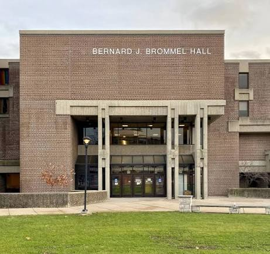
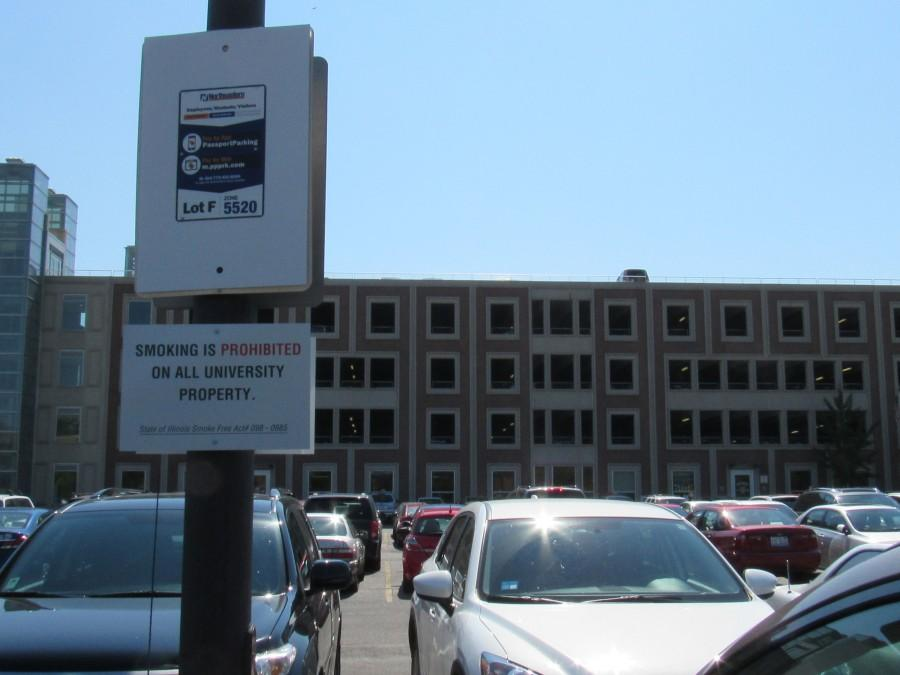
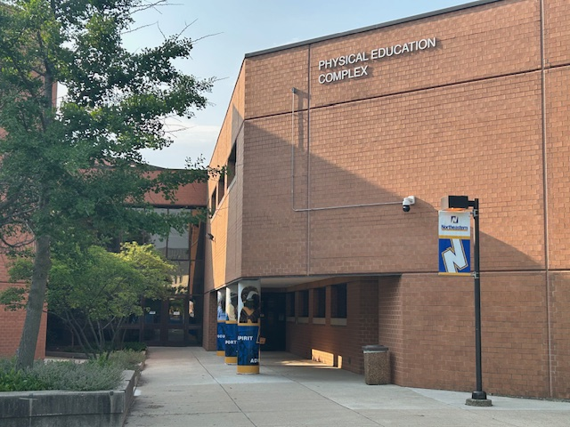
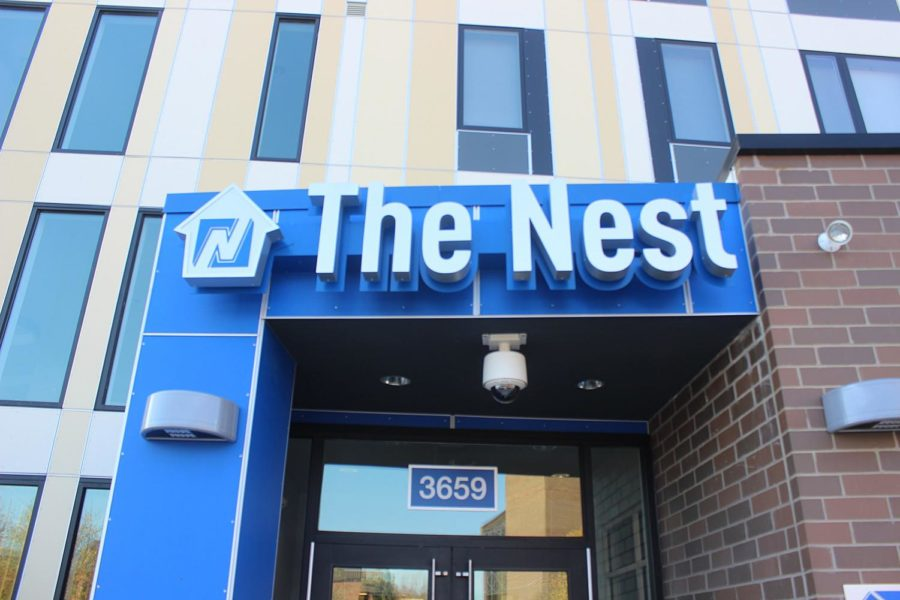

<!DOCTYPE html>
<html>
    <head>
        <title></title>
        <link rel="stylesheet" href="https://unpkg.com/leaflet@1.9.4/dist/leaflet.css"
           integrity="sha256-p4NxAoJBhIIN+hmNHrzRCf9tD/miZyoHS5obTRR9BMY="
           crossorigin=""/>
         <script src="https://unpkg.com/leaflet@1.9.4/dist/leaflet.js"
           integrity="sha256-20nQCchB9co0qIjJZRGuk2/Z9VM+kNiyxNV1lvTlZBo="
           crossorigin=""></script>
        
        <style>
            #map {
                position: relative;
                height: calc(100vh - 51px);
                width: 100%;   
            }
        </style>
    </head>
    <body>
        <div id="map"></div>
        <script type="text/javascript">
            let map = L.map('map', {
                center: [41.9794,-87.718],
                zoom: 17
            });
            let canvas = L.tileLayer('https://tiles.stadiamaps.com/tiles/alidade_smooth/{z}/{x}/{y}{r}.{ext}?api_key=b7458727-6c5e-4fef-bdbb-b54d1e5635be', {
                minZoom: 0,
                maxZoom: 20,
                attribution: '&copy; <a href="https://www.stadiamaps.com/" target="_blank">Stadia Maps</a> &copy; <a href="https://openmaptiles.org/" target="_blank">OpenMapTiles</a> &copy; <a href="https://www.openstreetmap.org/copyright">OpenStreetMap</a> contributors',
                ext: 'png'
            }).addTo(map);
            let satellite = L.tileLayer('https://server.arcgisonline.com/ArcGIS/rest/services/World_Imagery/MapServer/tile/{z}/{y}/{x}', {
                attribution: 'Tiles © Esri — Source: Esri, i-cubed, USDA, USGS, AEX, GeoEye, Getmapping, Aerogrid, IGN, IGP, UPR-EGP, and the GIS User Community'
            });
            let basemaps = {
                "Light Gray": canvas,
                "Satellite Imagery": satellite
            }
            let iconConfigs = {
                bbh: {
                    latLong: [41.98041104340046, -87.71700690887702],
                    icon: L.icon({
                        iconUrl: './map.png',
                        iconSize: [30, 30],
                        iconAnchor: [15, 15],
                        popupAnchor: [0, -10]
                    }),
                    altText: 'A map icon on the location of Bernard J Brommel Hall',
                    buildingImage: '',
                    description: 'Bernard J Brommel Hall, or BBH, is where the majority of STEM courses, including Geography courses, take place.'
                },
                library: {
                    latLong: [41.98034343650484, -87.71919813944515],
                    icon: L.icon({
                        iconUrl: './library.png',
                        iconSize: [30, 30],
                        iconAnchor: [15, 15],
                        popupAnchor: [0, -10]
                    }),
                    altText: 'A library icon on the location of Ronald Williams library',
                    buildingImage: '',
                    description: 'The Ronald Williams library on main campus is an important resource for NEIU students. The library provides access to 1.2 million items, rooms and spaces for study and work, and computer rentals.'
                },
                parking: {
                    latLong: [41.981114450211855, -87.72022291547162],
                    icon: L.icon({
                        iconUrl: './parking-area.png',
                        iconSize: [30, 30],
                        iconAnchor: [15, 15],
                        popupAnchor: [0, -10]
                    }),
                    altText: 'A parking icon on the location of Parking Lot F',
                    buildingImage: '',
                    description: 'Parking Lot F has lots of parking available for students and it convenient to access most buildings on campus.'
                },
                studentUnion: {
                    latLong: [41.98131295267847, -87.71877667163135],
                    icon: L.icon({
                        iconUrl: './canteen.png',
                        iconSize: [30, 30],
                        iconAnchor: [15, 15],
                        popupAnchor: [0, -10]
                    }),
                    altText: 'A canteen icon on the location of the Student Union',
                    buildingImage: '',
                    description: 'The Student Union is the hub of student life at NEIU. It contains the Welcome Desk, cafeteria, Alumni Hall, Golden Eagles room, and relaxation room.'
                },
                athleticsCenter: {
                    latLong: [41.977929675746566, -87.71727812312841],
                    icon: L.icon({
                        iconUrl: './athlete.png',
                        iconSize: [30, 30],
                        iconAnchor: [15, 15],
                        popupAnchor: [0, -10]
                    }),
                    altText: 'An athelete icon on the location of the Physical Education complex',
                    buildingImage: '',
                    description: 'The NEIU Physical Education Complex has a fitness center with a weight room, multiple gymnasiums, a pool, a track, and other spaces for physical activity.'
                },
                theNest: {
                    latLong: [41.97971438674563, -87.71984740007112],
                    icon: L.icon({
                        iconUrl: './hotel.png',
                        iconSize: [30, 30],
                        iconAnchor: [15, 15],
                        popupAnchor: [0, -10]
                    }),
                    altText: 'A bunk bed icon on the location of the Nest, the student residence',
                    buildingImage: '',
                    description: 'The Nest is the primary student housing on NEIU\'s campus, capable of housing up to 440 students. The Nest has 2 to 4 bedroom apartments, a fitness center, academic success room, game room, recreation room, and laundry facilities.'
                },
            }

            function createMarker(iconConfig) {
                return L.marker(
                    iconConfig.latLong,
                    {
                        icon: iconConfig.icon,
                        alt: iconConfig.altText
                    }
                ).addTo(map).bindPopup(
                    '<p>' + iconConfig.description + '</p>' + iconConfig.buildingImage
                )
            }

            L.control.layers(basemaps).addTo(map);
            for (const config of Object.values(iconConfigs)) {
                createMarker(config);
            }
        </script>
    </body>
</html>